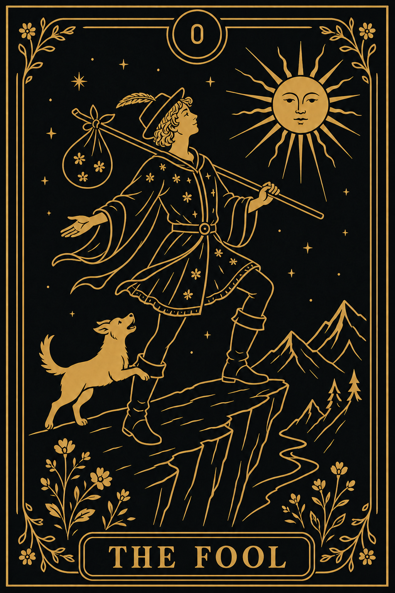
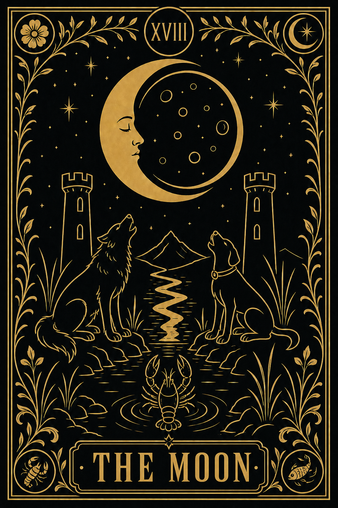
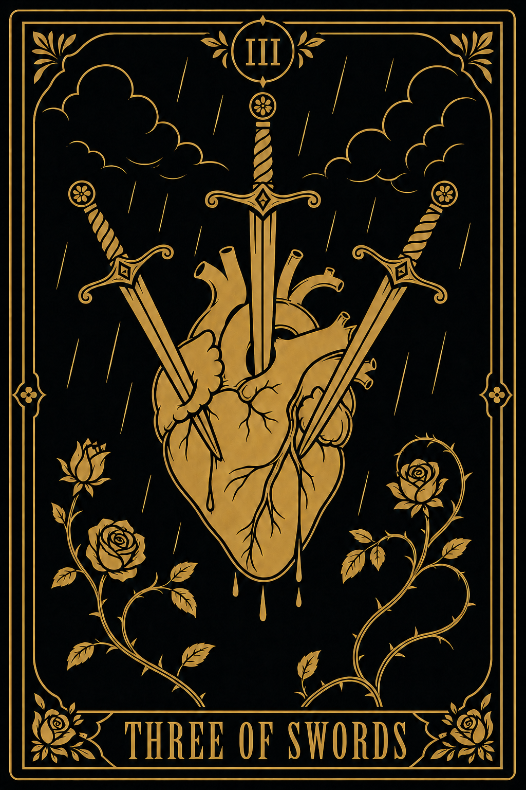

Design Gate 05 · V5.2 · Wider title treatment
The approved simple 2D artwork remains unchanged. The Ferrum-inspired title glyphs are now approximately 25–30% wider on the x-axis, with broader counters and stronger strokes for improved readability.


